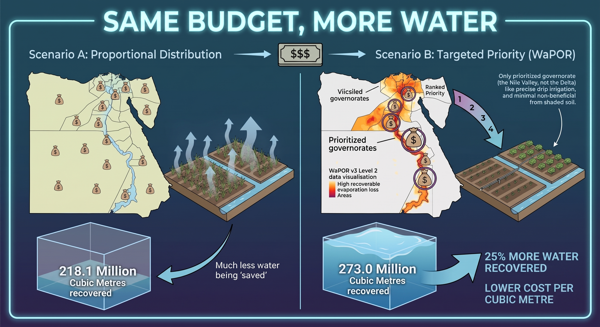

Same Budget, More Water
Ranking Egypt's irrigation budget by the water that evaporated without growing a crop.
IPAT, the irrigation assessment tool already running at Egypt's
Ministry of Water Resources and Irrigation, shows where water productivity is high and low across
1.5 million ha of the Middle and West Delta. It stops there. A ministry with a fixed budget still has
to decide where to spend.
This is the layer that answers that. WaPOR v3 separates transpiration, water that
grew a crop, from evaporation, water that left the field having grown nothing.
We turn that split into a ranked spending list: which areas get the on-farm modernisation budget,
in what order, and how much water each dollar buys back.
.png)
Non-beneficial evaporation, by governorate
FAO WaPOR v3 · Level 2, 100 m · 18 dekads summed, 1 May – 31 Oct 2024 (summer / Nili–Sefi) · retrieved 19 Aug 2026
Darker = more of this governorate's water evaporated instead of growing a crop. We expected the northern Delta rice belt to lead. It does not. A closed rice canopy shades the ponded water, so Damietta and Kafr El Sheikh turn out to hold the most efficient irrigated land we measured in Egypt. The wasted fraction is close to uniform nationally. What differs is throughput: Upper Egypt pushes more water through a field, so the same inefficiency costs more.
The decision: this season's spending list
Move the budget. The list re-ranks by cost of water saved, cheapest water first, and funds down the list until the money runs out.
Equity floor: the share of the budget spread across every governorate by area before the rest is targeted. No ministry with an equity mandate will fund three districts out of twenty, so this prices the constraint instead of ignoring it.
The idea in one picture
The same twelve million dollars, spent in two different orders. On the left it is spread in proportion to cultivated area. On the right it is ranked by how much evaporated water each dollar recovers, and spent on laser land levelling in the Nile Valley. Nothing changes except the order.

Where each governorate's water actually goes
Seasonal water balance split into transpiration (productive), evaporation (recoverable) and interception. The evaporation share is the target.
Assumptions, change them and watch the answer move
These are literature-order estimates, not measurements. The ranking depends on them, so they are exposed rather than buried. If you have better figures, type them in, everything above recalculates.